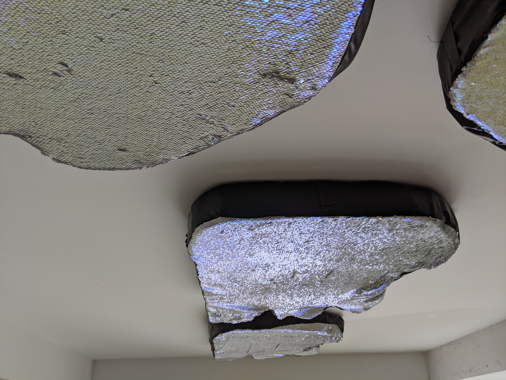

![Installation photo of a white-walled gallery with a tall ceiling and large window. A large pink breast with a yellow X across the nipple hangs from the wall onto the floor, made from a bright magenta pink fabric with textured pustules. To the right wall hangs a blue pinstripe bicep with a yellow heart-shaped nipple and leather stitching across the heart and bottom. Above hangs a pattern of white-to-green shift sequin angel wings. Above hangs a gigantic black and white cartoon eye, hanging above the window.](css/images/god1.png)

{kind=link}
Monsters are powerful symbols of transformative agency, heavily ingrained in Western culture. With transmutating creatures living rent-free in our collective imagination, I have to wonder: why is it taboo for queer people to transform? Just as LGBTQ+ activists reclaimed ‘queer’ as a radical identifier, I reclaim ‘monster’ as an uncompromising symbol of bodily agency.
A science experiment in my own right, my beasties mimic the conditions of my transition, from ‘coming out’ to gender confirmation surgery. Sutures become ladder stitches, tattoo’d decoration blooms as embroidery. From the sagging, pustulating breast to the uplifting Seraph above, the spectrum of dysphoria to euphoria broadens as you enter my monster mash.
Birthing my brood is understanding my body. Sculpting my form is self-love.
If this sounds like a B-Rate horror movie, good.
Click here to view the full Proximity exhibition online.
Works:
TIRESIAS/FELT SO HEAVY - minky, pleather, embroidery floss, ink on satin, packing pellets.
DIONYSUS/KEEP IT TIGHT - minky, pleather, embroidery floss, ink on satin, polyfill
CERBERUS/THERIANTHROPY - duck canvas, minky, pleather, embroidery floss, ink on satin
CHROMA/I FEEL LIKE GLITTER - sequined fabric, pleather, embroidery floss, foam.
SERAPH/BE NOT AFRAID - duck canvas, pleather, embroidery floss, ink on satin, polyfill


{kind=link}



Select documentation by Kristen Phipps